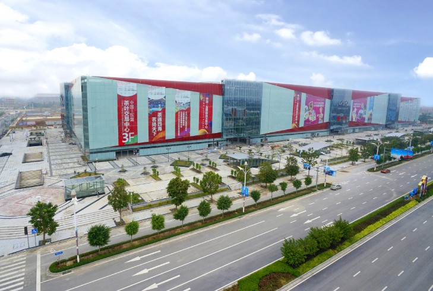

东盟特色商品交易广场总建筑面积达48万㎡，分为A、B两座，由地下两层和地上五层构成，其中A座24万㎡交易广场已完成外立面装修。A座1、2楼规划有5万㎡的华盛奥特莱斯购物中心，广西首家阿迪达斯、耐克工厂直营店已进驻。3楼是中国-东盟茶叶交易中心，经营面积达4万㎡，是广西区内首个单体面积最大、购物环境最佳、商业覆盖最广的茶叶专业市场。4楼是5万㎡东盟产品体验馆，由公司自营和东盟商家经营相结合，将汇聚东盟各国商品展示及歌舞风情，集购物、休闲、旅游于一体，将成为南宁市一个独特的东南亚风情景点。5楼是多功能国际会展中心。